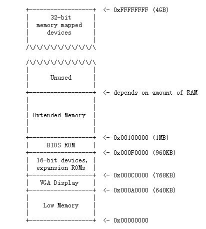

计算机的物理地址空间
机器刚刚启动的时候，物理内存是按照下面这样划分的：

第一代PC基于16位Intel 8088处理器，只能寻址1MB的物理内存。所以早期PC的物理地址空间将从0x00000000开始，到0x000FFFFF结束，而不是0xFFFFFFFF（32位）。标记为Low Memory的640KB空间是早期PC能够使用的唯一随机访问内存（RAM）。
从0x000A0000到0x000FFFFF的384KB区域（也就是640KB到1MB之间的区域）由硬件预留，用于特殊用途，如视频显示缓冲区（显存）和一些系统固件。这个保留区域中最重要的部分是Basic Input/Output System (BIOS)（下面会介绍这个概念），它占用了从0x000F0000到0x000FFFFF的64KB区域。
在早期的PC中，BIOS保存在真正的只读存储器（ROM）中，但现在的pc将BIOS存储在可更新的闪存中。BIOS主要负责对系统进行基本的初始化操作，如激活显卡、检查内存安装量等。执行这个初始化之后，BIOS从一些适当的位置（比如硬盘）加载操作系统，并将机器的控制权传递给操作系统。（划重点，BIOS的作用）。
随着技术的发展，Intel最终使用80286和80386处理器突破了1MB的寻址，它们分别支持16MB和4GB的物理地址空间，但PC架构师仍然保留了原始的1MB物理地址空间布局，以确保与现有软件的向后兼容性。因此，现代pc在物理内存中有一个从0x000A0000到0x00100000的一个洞，将RAM划分为 “low memory” 或 “conventional memory” （前640KB）和 “extended memory” （其他的部分）。
最近的x86处理器可以支持超过4GB的物理RAM，所以RAM可以扩展到0xFFFFFFFF以上。在这种情况下，BIOS必须安排在系统RAM的32位可寻址区域的顶部留下第二个洞，为这些32位设备的映射留下空间（实际上是虚拟内存）。